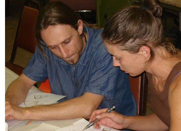

What's New
As the international LaRouche Youth Movement (LYM) works through Kepler's Astronomia Nova -- the begining of modern science along the narrow track of revolutionary development of the relationship of humanity to the universe -- this page is constantly being updated. Here is a list of “revisions” since the official launch of the site in September, 2006.
- Mar 8, 2008
- A new page for chapter 68 has been created!
- Jan 12, 2008
- • A calculator has been added to the chapter 16 page, letting you go through the calculations exactly as Kepler did in determining the vicarious hypothesis.
- • Chapter 62 has a page beautifully demonstrating the minor premise of the argument.
- Jan 11, 2008
- A link has been made for chapter 61.
- Dec 1, 2007
- Brief pages have been made for more chapters in Part V
- October 16, 2007
- Chapters 42 and 44 have been created.
- October 14, 2007
- Chapter 57 has been significantly expanded, and no longer crashes your web browser when you look at it!
- September 22, 2007
- Chapters 50 and 54 have been created (although not completed), and chapters 51, 52, and 56 have been updated. Chapter 51 had missing distances at the middle longitudes (154,400 and 154,278) which have now been added, and chapter 56 had its animated gif converted to a Flash file.

- September 11, 2007
- Chapter 48 has been created.
- September 9, 2007
- Chapter 49 has been created.
- September 2, 2007
- Chapter 47 has been created.
- August 30, 2007
- A thorough page for chapter 46 has been created, with an animation of the oval path, which, you will notice, does not look the same as the animation in chapter 45.
- August 21, 2007
- Two additions have been made recently. The page for chapter 43 has been updated, and an animation has been made to demonstrate the difference between the vicarious hypothesis, the bisected version of that hypothesis, and the area-time hypothesis.
- Also, an animation that allows you to see how an equant would have to behave in a universe governed by gravitation, is available here.
- July 5, 2007
- The equant model has been updated to display the angles, allowing you to check Kepler's results in chapters 18 and 19.
- June 15, 2007
- A new animation has been added to the lab, an interactive equant model.
- The vicarious hypothesis interactive animation has been updated. Open it and press i to see the new options. Why must Kepler use four observation, when Ptolemy used only three?
- June 1, 2007
- The Computer Help has been updated, and a guide for new visitors has been added.
- May 22, 2007
- The vicarious hypothesis animation has been corrected to actually change angles FAH and FCH as Kepler does.
- May 19, 2007
- Chapter 4 has been updated. There is still a link to the old version.
- May 17, 2007
- Flash Animation for the vicarious hypothesis of chapter 16.
- May 14, 2007
- Equivalence of Hypotheses added (in Flash). It uses the apparent sun. Mean sun is in the works.
- May 9, 2007
- Chapter 56 has been corrected! The old page was in error.
- Chapter 58, which made reference to 56, has also been corrected.
- April 20, 2007
- Chapter 51 has one small animation added to it.
- February 26, 2007
- Chapter 41 is done now.
- February 4, 2007
- Chapter 37 has been updated, with the first Flash animation for this site.
- Chapter 41 has been created.
- January 19, 2007
- Links for Chapter 37 (including Disney teacups!) and Chapter 38 are now active.
- January 5, 2007
- There now exists yet another almost-elliptical animation, this time in Chapter 30, where Kepler develops his table of Sun-Earth distances.
- December 17, 2006
- Based on an idea from Michelle, Chapter 21 now has its own page with animations. Now the real false hypothesis is available, rather than only an algebraic attempt to make a catenary.
- December 7, 2006
- Chapter 9 is now complete, with more animations, and with corrections.
|